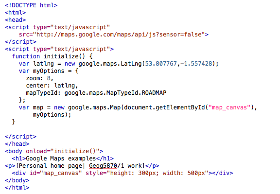

In the example using KML files, there was no need to use a Google Maps API key. It's possible to produce useful maps through this method. Rather than typing the KML url into the query box each time, it's also possible to create a fixed url that can be clicked on. It is therefore possible to create an application that dynamically draws a map based on some criteria. The process would be roughly as follows:
This process would allow sets of markers to be dynamically created, but would not offer any further control over the presentation of the map, and furthermore, the newly generated link would cause the user to navigate away from the original web site.
Much more control is possible if we use the Google Maps API. We will now revisit this example, and see how it can be improved.

There are a number of changes to the original file. Firstly, the STYLE and META tags in the HEAD section have been removed, as we do not want the map to occupy the whole of the window, and also to make the file simpler. Other changes to the original file are highlighted:
For your final task, do the following:
You should now have a modified example that is focused on Leeds. The map can be panned and zoomed; some controls are included on the map, and it should also respond to double-click events, and to mouse wheel events. The size and type of controls that are included by default depend on the map size. In the above example, the map is relatively small. Try increasing the height and width parameters (in the style parameter of the map_canvas DIV), and you will see that as the map becomes larger so that map controls become more detailed.
NOTE: You will be asked to register for a free key - it allows Google to monitor usage and bill you if your site gets too much traffic (which isn't going to happen on this course)!
You can sign up for one now, or later in the course.
Now you have some familiarity, you can move onto Unit 3 that will introduce Java Script (the code behind Google Maps) in more detail.